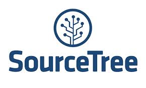

The Readium Projects primary goal is to provide rock-solid, performant building blocks and applications for EPUB3 publications.
The ReadiumJS project is developing a JavaScript library (readium-js) and viewer (readium-js-viewer ) for EPUB 3 rendering optimized for use to render EPUB files directly from websites and in browser-based "cloud" readers. Using ReadiumJS does not require any server-side infrastructure or browser plug-ins. ReadiumJS shares common JS modules (readium-shared-js) with the Readium SDK project which targets native apps.
There are two parts to ReadiumJS:
The Readium SDK project is developing a compact, performant EPUB 3 rendering engine optimized for use in native apps for tablets and other devices. The Readium SDK Core C++ library with platform wrappers implementations where appropriate.
THe SDK is available for both open-source and commercial use. Details of the licensing is available here
The Readium Foundation is developing a DRM library, Licensed Content Protection (LCP) which can be used with the Readium SDK to build DRM-enabled clients as well as server-side components. Readium SDK will not require use of Readium LCP, which will be separately licensed to interested parties.
Readium is an open-source project and extends its thanks to the following organizations for supporting our open-source development.
|
|
|
 |
|
|
JetBrains WebStorm |
JetBrains AppCode |
Atlassian SourceTree |
Visual Studio 2015 |